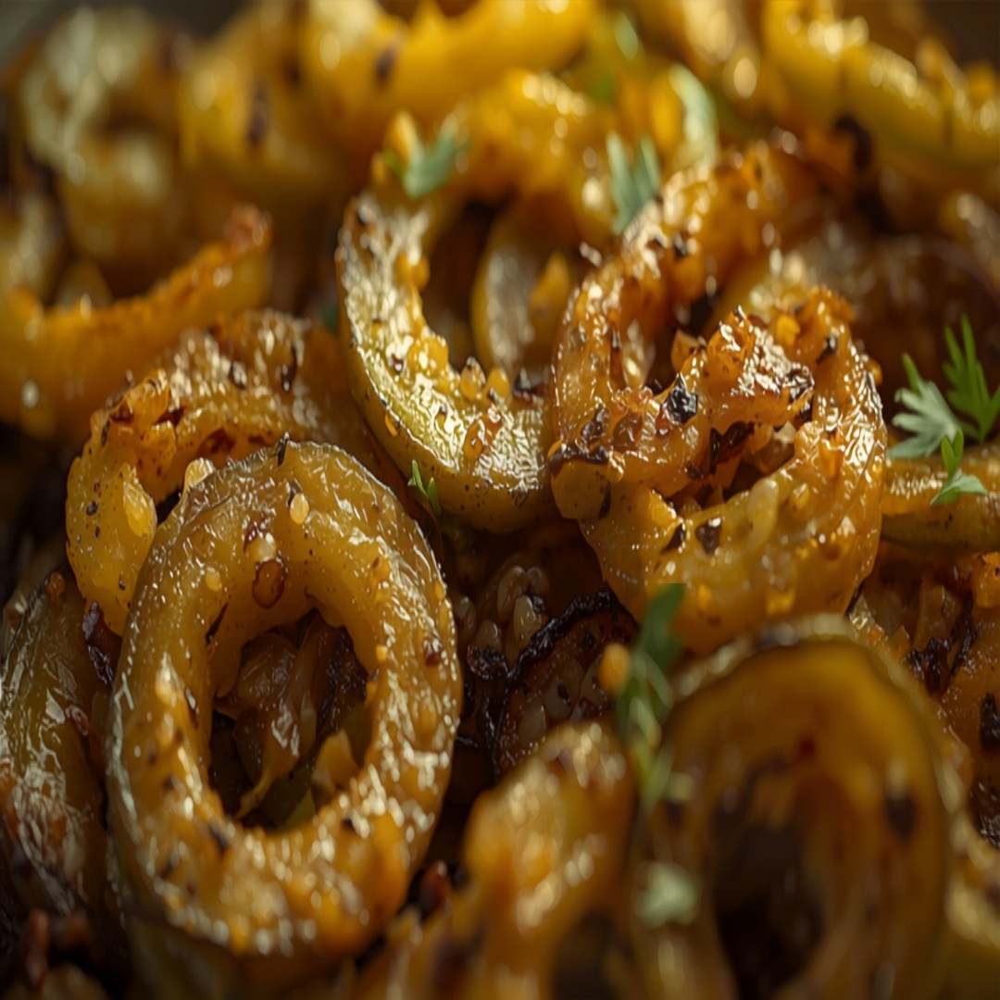

Un auténtico salteado seco y especiado de melón amargo del norte de la India con cebolla -- una guarnición de todos los días apreciada por su impacto glucémico naturalmente bajo.
Información Nutricional (por porción)
90
Calorías
9g
Carbohidratos
2g
Proteína
6g
Grasa
4g
Fibra
~15
IG Est.
Por qué encaja en una dieta apta para diabéticos
Con 9g de carbohidratos por porción, encaja cómodamente en la mayoría de los planes de alimentación bajos en carbohidratos para diabetes, y su índice glucémico estimado de ~15 significa que los carbohidratos que tiene tienden a digerirse lentamente en lugar de elevar rápido el azúcar en la sangre.
Ingredientes
- 1 lb455 g melón amargo
- 1/2 entero1/2 entero cebolla
- 1/4 cdta1 ml cúrcuma
- 1/2 cdta2 ml cilantro molido
- 1/4 cdta1 ml chile rojo en polvo
- 1/4 cdta1 ml sal
- 1 cda15 ml aceite
Ya está en la app
Esta receta ya está en la app de GlucoBeacon — agrégala directamente a tu lista de compras y a tu control de carbohidratos diario en un toque, gratis.
También en la app — gratis
- 🍽️ Asesor de Restaurantes — más de 3,700 platillos de 53 cadenas
- 📷 Cámara de Comida con IA — apunta, escanea y conoce tus carbohidratos al instante
- 🡺 Estimador de A1C — a partir de tus lecturas registradas
Instrucciones
- Corta el melón amargo en rodajas finas, frótalo con un poco de sal y déjalo reposar 15 minutos para reducir el amargor, luego enjuágalo y sécalo con palmaditas.
- Calienta el aceite en una sartén y sofríe la cebolla hasta que esté blanda, unos 4 minutos.
- Añade el melón amargo, la cúrcuma, el cilantro molido y el chile rojo en polvo, y cocina 12-15 minutos, revolviendo ocasionalmente, hasta que esté tierno y ligeramente dorado.
- Sazona con sal al gusto y sirve caliente.